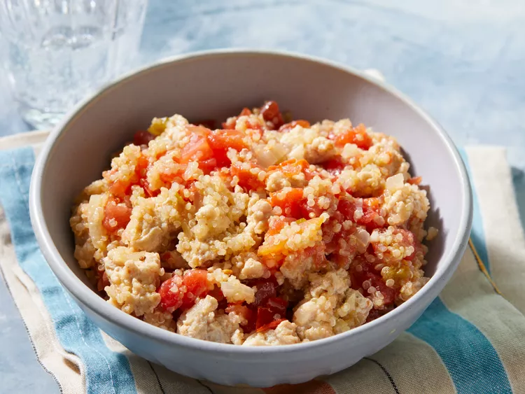

Home
Quinoa Chicken

Description
This dish of chicken and quinoa should require only one pan.
Ingredients
- 2 cups (473 ml) chicken broth
- 1 cup (227 g) quinoa
- 2 tsp oil
- 0.5 onion, chopped
- 2 cloves garlic, minced
- 1.5 lbs (0.68 kg) ground chicken
- 15 oz (444 ml) cans diced tomatoes with green chile peppers
Steps
- Assemble ingredients
- Bring chicken broth and quinoa to boil in a saucepan. Reduce heat to medium-low, cover, and simmer until quinoa is tender and water has been absorbed, 15 to 20 minutes.
- Meanwhile, heat vegetable oil in a large skillet over medium-high heat. Sauté onion and garlic in hot oil until onion is translucent, about 5 minutes. Add ground chicken; cook and stir until browned and crumbly, 5 to 7 minutes.
- Stir cooked quinoa and diced tomatoes into chicken mixture; bring to a simmer and cook long enough for flavors to meld, about 10 minutes more.